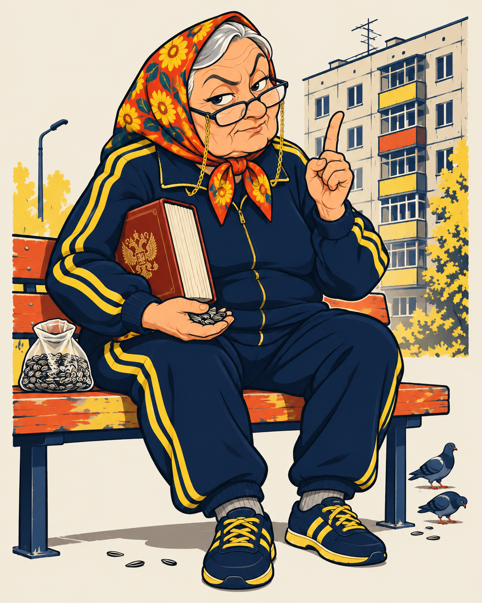
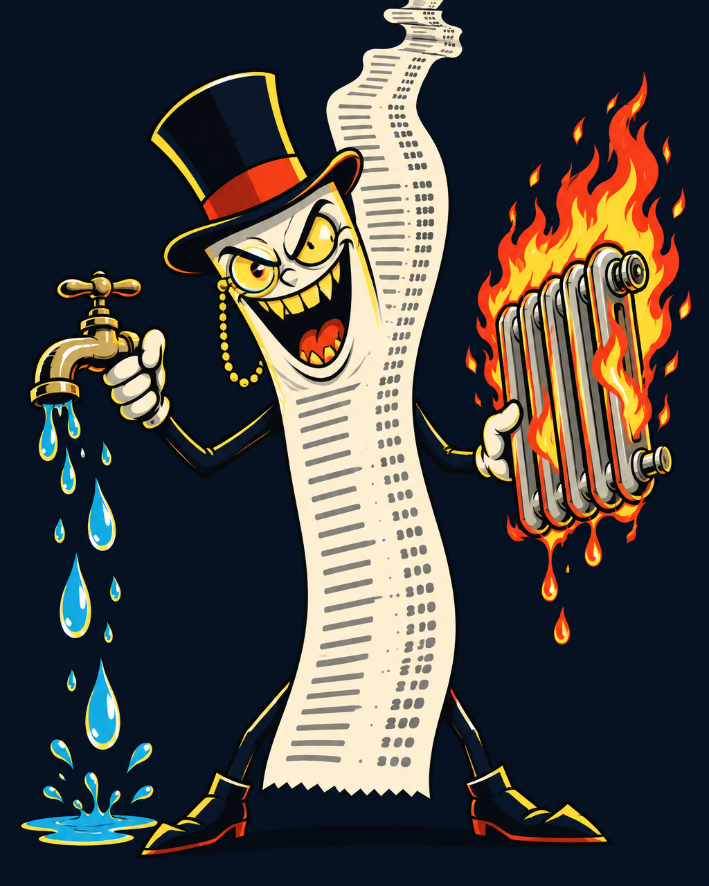

Герои v3 ·
ещё 6 вариантов

Баба Нюра
бабка со скамейки, знает все законы
«Милок, я тридцать лет в ЖЭКе. Статью назову — не моргнёшь»
Гусь Пошлина
злобный гусь-бюрократ
«Га-га! Госпошлину оплатил? А если найду?»
Капибара Нотариус
дзен-разоблачитель слухов
«Все паникуют. Я проверила. Это СЛУХ. Возвращаюсь в ванну»
Енот Селлер
замученный ИП с маркетплейса
«Маркировка, налог, ПВЗ… Я просто хотел продавать носки»
Гоша «По закону»
пацан со двора, читает кодекс
«Слышь, не по понятиям, а по ст. 51 Конституции. Разница есть»

Мистер Квитанция
злодей ЖКХ, растёт каждый месяц
«Ха-ха! С июля я стал длиннее. Опять»